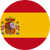

Die Geschichte des Tennis umfasst die Entwicklung der Sportart Tennis vom Hochmittelalter bis zur Gegenwart.
Sie lässt sich bis zu französischen Klöstern des Mittelalters zurückverfolgen. Aus einem frühen, unter Mönchen
verbreiteten Rückschlagspiele entwickelte sich das Jeu de Paume, das in den Ballhäusern des 16. und 17. Jahrhunderts vor allem
in Frankreich und England eine Blütezeit erlebt und bei Adel und Bürgertum beliebt war. Von der einfachen Bevölkerung wurde es im Freien
gespielt, woraus im Laufe der Zeit weitere Spiele wie das Pelota entstanden sind.
In den 1870er Jahren wurde in Großbritannien das moderne Rasentennis erfunden, das sich zunächst in Europa, den Vereinigten Staaten und den Kolonien des Britischen Weltreichs
verbreitete. Bereits um die Jahrhundertwende wurden in Europa Tennisturniere mit internationaler Beteiligung veranstaltet. 1900 fand mit dem Davis Cup der erste
Länderwettkampf im Tennis statt. 1923 einigte sich der zehn Jahre zuvor gegründete Internationale Tennisverband auf die vier bis heute wichtigsten Grand-Slam-Turniere.
Die Beschränkung auf Amateure im Vereins- und Turnierbetrieb, die in den Jahrzehnten nach den zweiten Weltkrieg zunehmend in die Kritik geraten war, wurde 1968 weitgehend abgeschafft.
Der Beginn der "Open Era" und die damit einhergehende Kommerzialisierung revolutionierte das Tennis in vielen Bereichen und verhalf dem bis dahin exklusiven Sport zum Durchbruch
in weite Teile der Gesellschaft. Heute zählt Tennis zu den bedeutendsten Sportarten weltweit.
| # | Name | Punkte | |
|---|---|---|---|
| 1 | Jannik Sinner | 11.830 | |
| 2 | Alexander Zverev | 7.635 | |
| 3 |  | Carlos Alcaraz | 7.010 |
| 4 | Taylor Fritz | 5.350 | |
| 5 | Daniil Medvedev | 5.030 | |
| 6 | Casper Ruud | 4.210 | |
| 7 | Novak Djokovic | 3.900 | |
| 8 | Alex de Minaur | 3.535 | |
| 9 | Andrey Rublev | 3.520 | |
| 10 | Grigor Dimitrov | 3.200 |